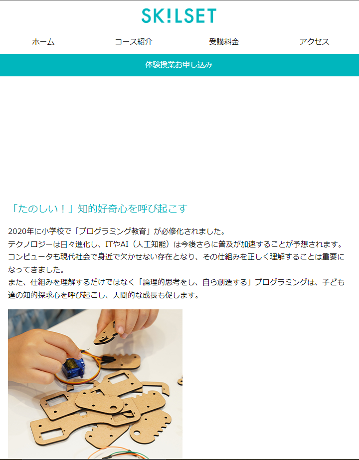
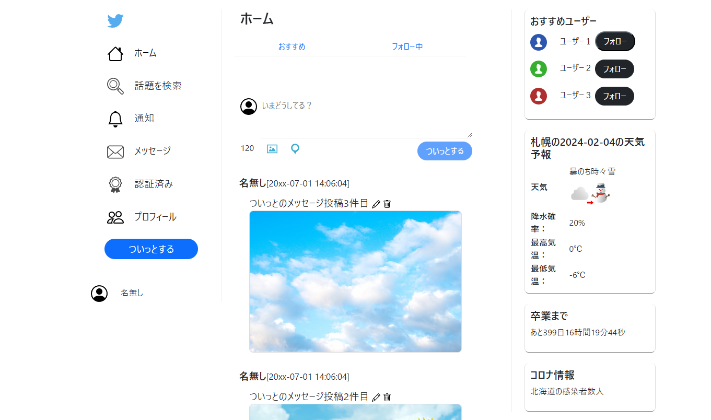

SCHOOL - PROJECTS
学校で制作したものを載せているページです。課題ではありますが、この程度の制作はできます。
HTML / CSS
HTML/CSSの授業として教科書の例として制作しました。
JavaScript
学校が用意したテキストをもとにTwitterの画面レイアウトを真似し、独自の機能を追加しました。
Python
PythonのTkinterとapiを利用してみる講義で制作したチャットボットです。動画は数当てゲームのデモ動画です。
Java
javaのオブジェクト指向を学ぶためにクラスやカプセル化、ポリモーフィズムなどを使いRPGを制作しました。
デモ動画は音が出ます！